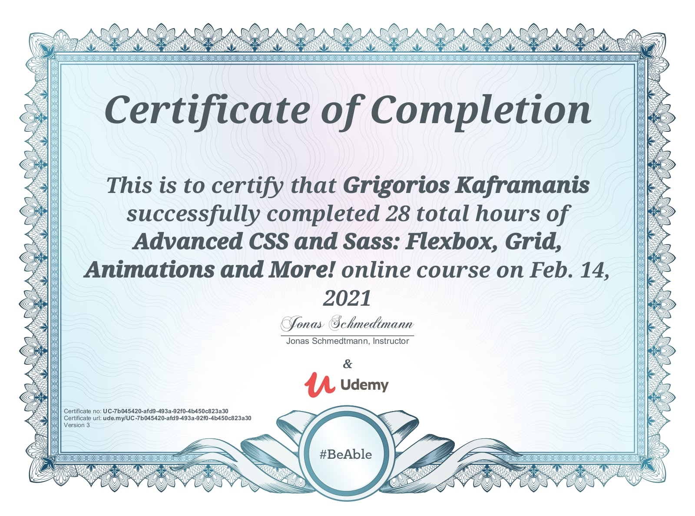
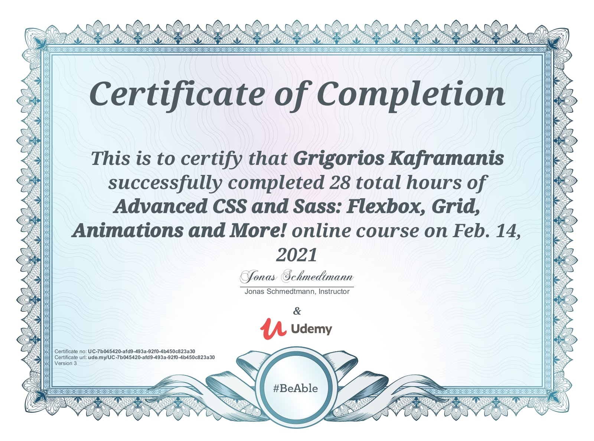

Γρηγόρης Καφραμάνης
Είμαι Προγραμματιστής
Διαδικτυακών Εφαρμογών & Λογισμικού
Μικρο Βιογραφικο
Γεννήθηκα στη Θεσσαλονίκη και σε μικρή ηλικία μετακόμισα στη Λαμία. Αποφοίτησα από το 3ο Λύκειο Λαμίας με βαθμολογία 19.3 / 20, αλλά ακόμα δεν είχα κατασταλάξει για το τι θέλω να κάνω με τη ζωή μου, και έτσι κατέληξα να σπουδάζω Πολιτικός Μηχανικός στο Αριστοτέλειο Πανεπιστήμιο της Θεσσαλονίκης.. Δεν χρειάστηκε μεγάλο χρονικό διάστημα για συνηδειτοποιήσω πως αυτό δεν ήταν το μονοπάτι που υποτίθεται πως έπρεπε να ακολουθήσω. Δεν μπορούσα να φανταστώ τον εαυτό μου να ασκεί το επάγγελμα του Πολιτικού Μηχανικού για το υπόλοιπο της ζωής μου, αλλά ακόμα δεν υπήρχε κάτι για το οποίο να ήμουν πραγματικά ενθουσιασμένος. Μου πήρε λίγο χρόνο να ανακαλύψω την αγάπη μου για τους υπολογιστές, το ίντερνετ, τον προγραμματισμό και την πληροφορική γενικότερα. Αυτό ήταν που ήθελα να σπουδάσω. Έτσι ξαναέδωσα πανελλαδικές εξετάσεις και μπήκα πρώτος στο Τμήμα Πληροφορικής με Εφαρμογές στη Βιοϊατρική του Πανεπιστημίου Θεσσαλίας, απ’ όπου αποφοίτησα με βαθμό πτυχίου 8.06 / 10.
Εκπαiδευση
Τμημα Πληροφορικης με Εφαρμογες στη Βιοϊατρικη
Το Τμήμα Πληροφορικής με Εφαρμογές στη Βιοϊατρική λειτουργεί από το ακαδημαϊκό έτος 2004-2005. Είναι ένα πρωτοποριακό τμήμα στον τομέα των Εφαρμοσμένων Επιστημών, καθώς καλύπτει ένα ευρύ φάσμα, τόσο στον τομέα της Πληροφορικής όσο και στον τομέα των εφαρμογών στη Βιοϊατρική. Το Τμήμα παρέχει στους φοιτητές γνώσεις Πληροφορικής αλλά και μία παράλληλη εξειδίκευση, που περιλαμβάνει την αξιοποίηση των Πληροφοριακών Συστημάτων στο χώρο της Υγείας, την ανάπτυξη λογισμικού για μεγάλες ιατρικές μονάδες, καθώς και την έρευνα στη Βιοϊατρική Τεχνολογία και Βιοπληροφορική.
Πιστοποιητικα
 
